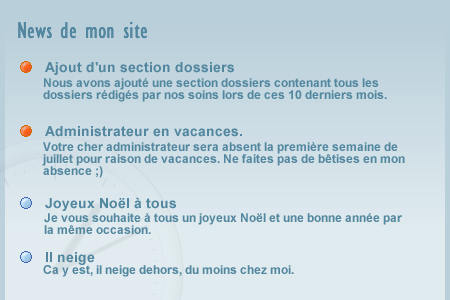
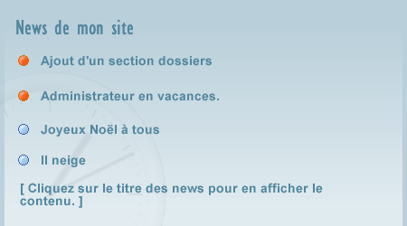

Je vais vous présenter de manière théorique et pratique une méthode pour différencier les messages, news, annonces, etc. lus et non lus. Nous allons utiliser une méthode dont le fondement est le timestamp UNIX.
Pour information, le timestamp UNIX retourne le temps mesuré en secondes depuis le début de l'époque UNIX. Il s'agit donc d'un nombre qui s'incrémente toutes les secondes.
On va faire simple et partir du principe qu'on enregistre le timestamp UNIX de chaque post, messages, annonces, news... C'est très important. Comme ça, on pourra positionner les messages dans le temps et vérifier s'il s'agit d'un nouveau ou d'un ancien message.
Il est plus ennuyeux pour nous d'enregistrer les dates sous une forme mm/jj/aaaa hh/mm/ss. Le timestamp UNIX est un nombre pur, c'est donc très facile pour nous de l'utiliser et de faire des comparaisons.
Allez, on démarre et on crée notre table « table_post ». C'est elle qui contiendra nos posts. (Il aurait pu s'agir de news, annonces, messages, signatures de livre d'or, etc. Je rappelle que ça s'applique à tout.)
CREATE TABLE `table_post` (
`id` int(8) UNSIGNED NOT NULL AUTO_INCREMENT,
`temps` int(11) UNSIGNED DEFAULT '0',
`titre` varchar(64) NOT NULL,
`message` text NOT NULL,
PRIMARY KEY (`id`)
);
id : numéro d’identification du message ;
temps : timestamp UNIX ;
titre : titre du message ;
message : message.
id
temps
titre
message
1
1137239489
Exemple de titre
Exemple de message
2
1128167402
Exemple de titre 2
Exemple de message 2
...
...
...
...
2853
1128167402
Exemple de titre 3
Exemple de message 3
2854
1131133339
Exemple de titre 4
Exemple de message 4
...
...
...
...
Ici, vous pouvez voir des nombres tels que « 1131133339 » : il s'agit de notre timestamp UNIX, on pourra facilement l'insérer dans notre table grâce à la fonction time(); de PHP. C'est vraiment le plus important pour nous, il nous servira à différencier nos messages dans le temps. Voir aussi : Bibliothèque PHP, fonction time().
<?php
$tmp = time(); // Contient le timestamp UNIX de l'instant où la variable est initialisée
echo $tmp; // Affiche un nombre du type : 1131133339
?>
Voici un petit exemple :
<?php
// Connexion à MySQL
// J'ai mis des addslashes, c'est un petit rappel de sécurité (attention, ils ne sont pas forcément nécessaires, reportez-vous à votre php.ini ou à votre hébergeur).
$req = 'INSERT INTO `table_post` (`temps`,`titre`,`message`) VALUES ("'.time().'","'.addslashes($_POST['titre']).'","'.addslashes($_POST['message']).'")';
mysql_query($req);
On va avoir besoin d'enregistrer des variables durant la visite : pour ce faire, on va utiliser les session php4 pour des raisons pratiques.
On pourrait s'en passer, mais les session php4 sont de plus en plus disponibles sur les différents hébergeurs PHP et on ne va donc pas s'en priver.
Exemple et rappel
Pour information, les sessions s'écrivent comme ceci :
<?php
// À placer avant toute sortie de code à l'écran
session_name('Session_sdz'); // Cette ligne n'est pas obligatoire
session_start(); // Démarrage de la session
?>
On peut ensuite initialiser des variables qui seront disponibles tout au long de la session (autrement dit, tant que le navigateur n'est pas fermé (ou dépassement de temps)).
<?php
// Une seule fois, je répète ici ;)
session_name('Session_sdz'); // Cette ligne n'est pas obligatoire
session_start(); // Démarrage de la session
$_SESSION['ma_var'] = 'test';
echo $_SESSION['ma_var'];
?>
On va distinguer deux temps pour la dernière visite :
un qu'on mettra dans nos variables session php4 ;
un autre qu'on enregistrera dans un cookie ou dans une base de données.
Le premier, celui qu'on initialisera comme variable session, ne sera pas mis à jour durant la visite du site, il servira de point de repère pour distinguer les différents temps de messages.
L'autre, on le mettra à jour aussi souvent que possible, il nous servira de point de repère pour des visites futures.
SESSION : le temps de dernière visite précédent (repère). COOKIE ou SQL : le temps de dernière visite courant.
Exemple
Voici un exemple de gestion de ces deux « types » de temps.
Le script procède comme suit :
1/ on vérifie si l’on a déjà créé la variable session ; 1.1/ si le cookie n'existe pas, on le crée, 1.2/ si l’on n'a pas créé la variable session, on la crée, 1.3/ ensuite, on incrémente la variable cookie ou sql ; 2/ on incrémente la variable cookie ou sql.
<?php
// Ce code doit être placé au début de chaque page qui affiche nos messages, news, annonces...
// Un require ou include peut être très utile
session_name('Nom_d_exemple');
session_start(); // Démarrage de la session
// POINT [1]
// On doit impérativement connaître le temps de visite précédent, et donc on vérifie si on l'a déjà
// Enregistré dans une variable session : si ce n'est pas fait, on l'enregistre
if( !isset( $_SESSION['tmp_derniere_visite'] ) ) {
// Ici, on part du principe que le temps de dernière visite est dans un cookie
// On aurait tout aussi bien pu enregistrer ce temps dans une BDD
// POINT [1.1]
// Si le temps de dernière visite (cookie) n'existe pas, on le crée.
if( !isset($_COOKIE['tmp_der_visite']) ) setcookie('tmp_der_visite',time(), time() + (3600*24*365));
// POINT [1.2]
// On enregistre le temps de dernière visite de la session
$_SESSION['tmp_derniere_visite'] = $_COOKIE['tmp_der_visite'];
// POINT [1.3]
// On met le temps de dernière visite à jour, pour les prochaines visites
setcookie('tmp_der_visite',time(), time() + (3600*24*365));
}
// POINT [2]
// On met le temps de dernière visite à jour, pour les prochaines visites
else setcookie('tmp_der_visite',time(), time() + (3600*24*365));
?>
Ben voilà : maintenant, on connaît le temps de notre dernière visite et le temps des différents messages. On va donc pouvoir commencer à classer nos messages en lus et non lus. Comment va-t-on procéder pour vérifier si un message est lu ou non ? Tout simplement avec un tout petit if().
Voici un exemple de ce que nous aurions pu faire avec nos variables session et notre table table_post :
<?php
/*******************************************************
** Gestion du temps de dernière visite
*******************************************************/
session_name('Nom_d_exemple');
session_start();
if( !isset( $_SESSION['tmp_derniere_visite'] ) ) {
if( !isset($_COOKIE['tmp_der_visite']) ) setcookie('tmp_der_visite',time(), time() + (3600*24*365));
$_SESSION['tmp_derniere_visite'] = $_COOKIE['tmp_der_visite'];
setcookie('tmp_der_visite',time(), time() + (3600*24*365));
}
else setcookie('tmp_der_visite',time(), time() + (3600*24*365));
/*******************************************************
** Affichage des messages
*******************************************************/
// Connexion à MySQL
$db = mysql_connect('host','user','mdp');
mysql_select_db('ma_bdd',$db);
// On sélectionne toute notre table et on la trie par date
$req = 'SELECT * FROM `table_post` ORDER BY `temps` DESC';
$sql = mysql_query('SELECT * FROM `table_post` ORDER BY `temps`');
// On va afficher une petite image qui signifie que le message est lu ou non
$msg_lu = './images/lu.png';
$msg_non_lu = './images/non_lu.png';
// On boucle sur nos différentes entrées
while( $data = mysql_fetch_assoc($sql) ) {
echo '<p>';
// Pour afficher une petite image qui signifie que le message est lu ou non
// Il nous suffit simplement de comparer le temps du message et celui de notre dernière visite.
if( $data['temps'] >= $_SESSION['tmp_derniere_visite'] )
echo '<img src="'.$msg_non_lu.'" alt="message non-lu" />';
else echo '<img src="'.$msg_lu.'" alt="message lu" />';
// Ensuite, on peut afficher notre message
echo ' <b>'.$data['titre'].'</b><br />'.$data['message'].'</p>';
}
?>
Vous voyez, c'est très simple : on compare le temps de dernière visite avec le temps du message. ;) Bon, c'est bien joli tout ça, mais les messages non lus restent non lus même si on les affiche.
C'est vrai, on va donc devoir trouver une petite parade à ça, mais il y a des cas où ce n'est pas nécessaire. Par exemple si on affiche des news sur un site, quel est l'intérêt de marquer les messages comme lus alors qu'on peut voir directement le contenu ? Autant les laisser comme non lus, et on différenciera ainsi plus facilement les nouveaux des anciens.
Mais si d'un autre côté, on n'affichait que les titres de nos messages et s'il fallait cliquer sur un lien pour pouvoir y accéder, là, on pourrait dire que c'est intéressant de ne voir que ceux qu'on n'a réellement pas lus, pour éviter de mélanger des non lus réels et imaginaires.
C'est ce que nous allons voir dans le prochain chapitre.
J’illustre quand même ma pensée.
Exemple de site 1

Exemple de site 2

Vous pouvez voir pour le premier exemple qu'il est inutile de marquer les news comme lues dès le premier affichage de la page, ça se fera automatiquement lors de la prochaine visite. Dans le second cas, il serait bien que les news sur lesquelles on a cliqué soient affichées comme lues.
Je voulais que vous différenciez bien les deux cas pour ne pas mettre de code inutilement ; certains peuvent arrêter de lire le tuto à partir d'ici. Ceux qui sont intéressés peuvent continuer avec moi. :lol:
Ne pas tenir compte des nouveaux messages déjà lus
Lorsqu'on a, comme dans l'exemple 2 (voir partie précédente), un affichage différé qui nécessite une action pour afficher le contenu, on peut légitimement exiger que les nouveaux messages affichés soient marqués comme lus.
Comment va-t-on faire ? C'est très simple : on va noter les messages visités, tout simplement.
Voici un exemple de script que nous pourrions utiliser lors de l'affichage du contenu d'une news par exemple.
<?php
/*******************************************************
** Gestion du temps de dernière visite
*******************************************************/
session_name('Nom_d_exemple');
session_start();
if( !isset( $_SESSION['tmp_derniere_visite'] ) ) {
if( !isset($_COOKIE['tmp_der_visite']) ) setcookie('tmp_der_visite',time(), time() + (3600*24*365));
$_SESSION['tmp_derniere_visite'] = $_COOKIE['tmp_der_visite'];
setcookie('tmp_der_visite',time(), time() + (3600*24*365));
}
else setcookie('tmp_der_visite',time(), time() + (3600*24*365));
/*******************************************************
** Affichage du contenu d'un message
*******************************************************/
// Connexion à MySQL
$db = mysql_connect('host','user','mdp');
mysql_select_db('ma_bdd',$db);
// On sélectionne une entrée de notre table désignée par $_GET['id']
$req = 'SELECT * FROM `table_post` WHERE id = '.intval($_GET['id']);
$sql = mysql_query('SELECT * FROM `table_post` ORDER BY `temps`');
$data = mysql_fetch_assoc($sql);
// On peut afficher notre message
echo '<p><b>'.$data['titre'].'</b><br />'.$data['message'].'</p>';
// On va marquer ce message pour indiquer qu'il a déjà été lu. Notez que l'ID du message fait partie intégrante du nom de la variable session, ça nous permettra de la différencier des autres.
$_SESSION['message_lu'.$data['id']] = $data['temps'];
}
?>
<?php
// Comme dans l'exemple
$_SESSION['message_lu'.$data['id']] = $data['temps'];
// Autre méthode, mais elle m'a déjà généré des erreurs, donc sur le principe, je l'évite.
$_SESSION['message_lu'][$data['id']] = $data['temps'];
?>
Notre script d'affichage principal devient alors :
<?php
/*******************************************************
** Gestion du temps de dernière visite
*******************************************************/
session_name('Nom_d_exemple');
session_start();
if( !isset( $_SESSION['tmp_derniere_visite'] ) ) {
if( !isset($_COOKIE['tmp_der_visite']) ) setcookie('tmp_der_visite',time(), time() + (3600*24*365));
$_SESSION['tmp_derniere_visite'] = $_COOKIE['tmp_der_visite'];
setcookie('tmp_der_visite',time(), time() + (3600*24*365));
}
else setcookie('tmp_der_visite',time(), time() + (3600*24*365));
/*******************************************************
** Affichage des messages
*******************************************************/
// Connexion à MySQL
$db = mysql_connect('host','user','mdp');
mysql_select_db('ma_bdd',$db);
// On sélectionne toute notre table et on la trie par date
$req = 'SELECT * FROM `table_post` ORDER BY `temps` DESC';
$sql = mysql_query('SELECT * FROM `table_post` ORDER BY `temps`');
// On va afficher une petite image qui signifie que le message est lu ou non
$msg_lu = './images/lu.png';
$msg_non_lu = './images/non_lu.png';
// On boucle sur nos différentes entrées
while( $data = mysql_fetch_assoc($sql) ) {
echo '<p>';
// Pour afficher une petite image qui signifie que le message est lu ou non
// Il nous suffit simplement de comparer le temps du message et celui de notre dernière visite.
if( $data['temps'] >= $_SESSION['tmp_derniere_visite'] ) {
// Mais il est possible que notre message soit marqué, nous devons en tenir compte
// Dans ce cas, le message est bel et bien lu
if( isset($_SESSION['message_lu'.$data['id']]) && $_SESSION['message_lu'.$data['id']] > $data['temps'] )
echo '<img src="'.$msg_lu.'" alt="message lu" />';
// Autrement, c'est normal, il s'agit bien d'un nouveau message non lu
else echo '<img src="'.$msg_non_lu.'" alt="message non-lu" />';
}
else echo '<img src="'.$msg_lu.'" alt="message lu" />';
// Ensuite, on peut afficher notre message
echo ' <a href="page_appelee.php?id='.$data['id'].'">'.$data['titre'].'</a></p>';
}
?>
Il pourrait arriver qu'un message doive pour une raison ou une autre être modifié. Il est alors intéressant de le marquer de nouveau comme non lu.
Les cas les plus fréquents sont :
une modification ;
l’ajout d’un commentaire ;
l’ajout d’une réponse ;
etc.
Pour indiquer qu'un message est de nouveau non lu, on va simplement mettre son « temps » à jour avec ce bout de script à utiliser le moment venu.
<?php
// Connexion à MySQL
// On connaît le message à mettre à jour grâce à la variable $_GET['id']
mysql_query('UPDATE `table_post` SET `temps` = '.time().' WHERE id = '.intval($_GET['id']));
?>
Alors là, c'est un cadeau, il n'y a rien de plus simple : pour faire en sorte que tous nos messages soient marqués comme lus, il suffit de revenir au présent. :D
Comme ceci, il est impossible au moment où on exécute ce script qu'un message déjà présent sur le site ait un temps supérieur au nôtre.
En conclusion, il suffit simplement de jouer avec les nombres pour savoir si un message est lu ou non. Vous devriez être capables maintenant d'appliquer les quelques principes que je viens d'exposer à vos propres scripts.
Si vous avez des questions, n'hésitez pas à vous renseigner sur le forum. Mais j'espère avoir été suffisamment complet. ;)
Vous aurez remarqué que les messages non lus lors de précédentes visites deviennent lus dans la suivante. C'est le problème de cette méthode, mais la plupart des grands forums (tels PHPBB) ont pour base ce principe de non-conservation.
Remarque : je n'accepte plus de support par MP ; en effet, la plupart du temps, c'est totalement infondé. Le forum est là pour ça, merci. :)